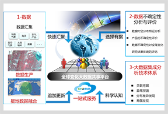

国家重大研发计划“全球变化大数据的科学认知与云共享平台”项目拟通过整合中国优势数据资源，突破部门分割的限制，建成中国首个全球变化大数据云共享平台，为全球变化研究提供直接可用的全球变化关键参数数据产品； 发展大数据集成分析技术体系，为全球变化研究的敏感因子与焦点问题认知提供数据与技术支撑，提升中国对全球变化的认知能力， 塑造中国在国际全球变化认知中的后发优势，是打破国立机构数据与信息“深藏闺中”的先行实践，也为跨部门、跨领域数据集成与共享提供样板，为我国的全球变化国际合作与话题引领提供有效的支撑。 项目建成的全球变化大数据云共享平台布局在国家气象信息中心，通过共享门户（GloBiD）提供和分享按主题、用户定制的全球变化大数据包，网站具备数据包的下载、可视化、在线近实时处理、统计、定制化等功能，实现一站式全球变化大数据共享网络服务。
展开